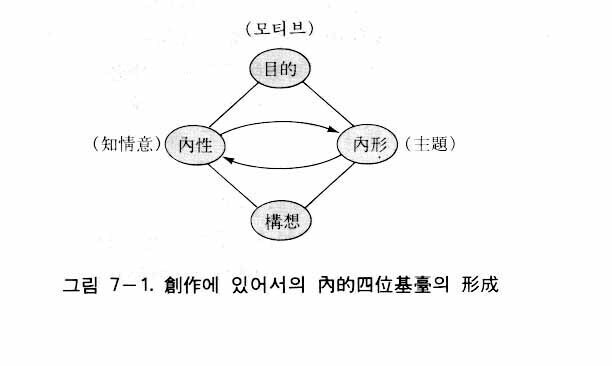
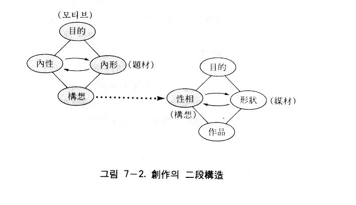
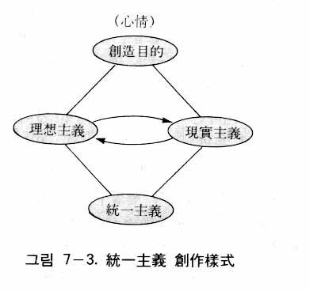
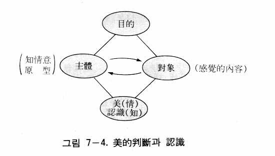

一般的に広い意味で、文化とは政治、経済、教育、宗教、思想、哲学、科学、芸術などのあらゆる人間活動の総合したものというのであるが、その中で最も中心的なものが芸術である。すなわち芸術は文化の精髄である。ところが今日、自由主義社会、旧共産主義社会を問わず、先進国、後進国を問わず、世界的に芸術はどんどん低俗化していく傾向を示している。退廃した芸術は退廃した文化を生む。今日の低俗化の状態がこのまま継続すれば、世界の文化は一大危機に直面せざるをえない。したがって新文化創建のためには、真なる芸術社会を建設しなくてはならず、そのためには新しい芸術論が切に必要とされるのである。
過去の歴史を振り返って見るとき、新しい時代が到来する度に、芸術は常に指導的役割を果たしてきた。例えば十五世紀ごろのルネサンス時代においても、その時代の先駆者的な役割を果たしたのは芸術家たちであった。また、かつて共産主義革命においても、芸術家たちの貢献が少なくなかった。特に、ロシア革命においては、ゴーリキーの作品が、また中国革命においては、魯迅の作品が革命運動に大きく寄与したことはよく知られている事実である。したがって、これからの新文化創建に際しても、真なる芸術活動が展開されなくてはならないのである。
ソ連を中心とした共産主義の芸術は、社会主義リアリズムと呼ばれた。共産主義者たちは芸術を革命のための重要な武器の一つと見ており、芸術を通じて資本主義社会の矛盾を暴露し、人々を革命へと駆り立てようとしたのであった。今日、共産主義社会の消滅とともに、否それ以前にすでに社会主義リアリズムは消え去っていたのであるが、一時は共産主義社会の芸術界を風靡していた。社会主義リアリズムは、唯物弁証法と唯物史観という確固たる信念に基づいた芸術論であった。それに対して、哲学的根拠の希薄な自由主義社会の芸術論は、脆弱性を露呈してきたのである。
したがって今日、たとえ社会主義リアリズムが消え去ったとしても、それが克服されないまま消えたために、その消滅は表面上の消滅であり、再び再現する可能性を全く排除することはできない。したがってその再現の可能性までも完全に一掃するためには、徹底した克服が要求されるのである。すなわち社会主義リアリズムを克服するために、新しい芸術論が必要となるのである。
このような立場から、ここに新しい芸術論として、統一思想の芸術論、すなわち統一芸術論を提示しようとするのである。言い換えれば、統一芸術論は今日の芸術の低俗化現象を阻止しようとするものであるだけでなく、過去の社会主義リアリズムを批判克服しながら、新しい哲学に基づいた代案を提示しようとするのである。それは新文化社会の創建に貢献するためである。神の摂理から見るとき、未来社会は真実社会であり、倫理社会であるだけでなく、芸術社会でもあるために、新しい芸術論の提示はなおさら必要なのである。
新しい芸術論は、もちろん統一原理を根拠としている。その原理的根拠の中で最も重要なのは、神の創造目的と創造性、喜びと相似の創造、授受作用などに関する理論である。
まず神の創造目的と創造性について説明する。神の宇宙創造の目的は、愛を通じて喜びを実現することであった。そのために神は、喜びの対象として宇宙を造られたのである。神が宇宙を創造されたということは、神は偉大な芸術家であって、宇宙は神の作品であるということを意味する。さらに具体的に表現すれば、神が喜びを得るために宇宙を造られたということは、直接的には人間を喜びの対象として造られたのであり、人間を喜ばせるために人間の喜びの対象として万物を造られたということを意味するのである。
人間に対する神の創造目的を人間を中心として見るときには、造られた目的すなわち被造目的となるが、それが全体目的と個体目的である。全体目的は神または全体（民族、国家、人類など個人に対する全体）に喜びを与えるということであり、個体目的は他人や全体から自分の喜びを得ることである。神は、人間がそのような被造目的を達成するように、人間に欲望を与えたのである。したがって人間は、神または全体を喜ばせながら自身も喜ぼうとする衝動（欲望）を常にもっている。人間の芸術活動は神の宇宙創造に由来しているが、創作活動は全体目的すなわち他者を喜ばせようとする欲望から出発し、鑑賞活動は個体目的すなわち自身の喜びを得ようとする欲望から出発しているのである。
神の創造性は原相における内的発展的四位基台と外的発展的四位基台の形成能力すなわち創造の二段構造の形成能力である。内的発展的四位基台の形成とは、ロゴス（構想）を形成することであり、外的発展的四位基台の形成とは、ロゴスに基づいて形状である質料を用いて万物を造るということである。神のそのような創造過程がそのまま人間の芸術活動における創作の二段構造の形成として現れる。すなわち、まず構想を立て、次に材料を用いて構想を実体化して作品をつくるのである。
次は喜びと相似の創造について説明する。すでに述べたように、神は喜びの対象として人間と万物を造られた。主体の喜びは自己の性相と形状に似た対象からくる刺激によって得られる(1)。したがって神は、神の二性性相に似るように形象的実体対象として人間を造られ、また象徴的実体対象として万物を造られたのである(2)。これを芸術論に適用すれば、芸術家は喜びを得るために、自己の性相と形状に似せて作品を作るのであり、鑑賞者は作品を通じて自己の性相と形状を相対的に感知して喜ぶという論理になる。
最後に授受作用について説明する。神において性相と形状は、主体と対象の相対的関係のもとで授受作用を行って合性体または繁殖体を成している(3)。繁殖体を成すとは、万物を創造するということである。神の原相内のこのような授受作用を芸術論に適用すれば、創作は主体（芸術家）と対象（素材）の授受作用によって行われ、鑑賞も主体（鑑賞者）と対象（作品）の授受作用によって行われるということになる。したがって創作においても鑑賞においても、主体のもつべき条件と対象のもつべき条件が必要となるのである。価値論において述べたように、価値（真善美）は主体的条件と対象的条件との相対関係によって決定されるからである。
芸術とは何か
人間の心には知情意の三つの機能があるが、それぞれの機能に対応した活動によって、文化活動の様々の分野が形成される。知的な活動によって、哲学・科学などの分野が形成され、意的な活動によって道徳・倫理などの実践的分野が形成され、情的な活動によって芸術分野が立てられる。したがって芸術とは、「美を創造し鑑賞する情的な活動」であるといえる。
それでは芸術の目的は何であろうか。神が人間と宇宙を創造された目的は、対象を愛することによって喜びを得るためであった。同様に、芸術家の対象である作品を創作あるいは鑑賞するのも喜びを得るためである。したがって芸術とは、「美の創作と鑑賞による喜びの創造活動」ということができる。
イギリスの美術評論家、ハーバート・リード（H.Read, 1893-1968）は、「すべての芸術家は……人を喜ばせたいという意欲をもっているのである。したがって芸術とは心楽しい形式をつくる試みである(4)」といっている。これは、統一思想の芸術の定義とよく似た芸術観である。
芸術と喜び
すでに述べたように、芸術とは美の創造すなわち喜びの創造である。それでは喜びとはいかなるものであろうか。
『原理講論』に「無形のものであろうと、実体であろうと、自己の性相と形状のとおりに展開された対象があって、それからくる刺激によって自体の性相と形状とを相対的に感じるとき、ここに初めて喜びが生ずるのである」（六五頁）と書かれているように、対象の性相と形状が、主体の性相と形状と互いに似ているとき、喜びが生じるのである。
存在論と認識論において述べるように、人間は宇宙を総合した実体相であるから、人体の中には宇宙のすべての性相と形状が潜在的にある。それゆえ、例えば花の場合、その花の色、形、やわらかさなどの原型がわれわれに備わっているのであり、その原型と現実の花が授受作用を通じて一致する体験がまさに認識であって、その一致から喜びの感情が生まれるのである。したがって対象の美を感知しようとすれば、まずその原型が心の中に浮かんでこなければならない。
それでは原型はいかにして浮かんでくるだろうか。第一に必要なのは、心霊の清さである。心霊が清ければ原型は自ら直観的に浮かんでくる。次は、教養である。美の様々な形態を体験的に理論的に学ぶことによって、認識に際して、潜在意識の中にあった原型がたやすく刺激され表面化されやすいのである。
性相の相似性
主体と対象が性相的に似るということは、思想、構想、個性、趣味、教養、心情などの一部分または全部が主体および対象間で互いに似ることを意味する。その中で、特に重要なものは思想である。対象の中に自分と同じような思想を発見するとき、美しく見える。したがって思想を豊富に、深くもっているならば、それだけ喜びの範囲が広がり、深い感動を受けるようになる。
そのように性相の相似性とは、対象（作品）の中にある作者の心情、思想などの性相的な側面と主体（鑑賞者）の心情、思想などの性相的な側面が互いに似ていることを意味するのである。
形状の相似性
次は、形状の相似性である。対象の形状に属するものは事物の形態、色、音、匂い、香りなど五官で感じる要素である。それらが主体である、われわれの中にある原型と一致するとき、美しさが感じられ、喜びの感情がわいてくる。
認識論において述べるように、外的世界は人間の心を拡大させ、展開したものであるから、外界のすべての要素は原型的に人間に備えられている。すなわち事物（万物、作品）の形態、色、音、匂いなどの形状的要素は、原型的に、縮小された形態として、われわれの中にすでに備わっているのであり、それがすなわち形状の相似性である。その似ている要素が、認識において互いに一致しながら情を刺激するとき、喜びが得られるのである。
相補性
さらに喜びの内容である相似性には、相補性という一面もある。つまり、主体は対象の中に自分に不足している特性を見て喜ぶのである。例えば、男性は女性の中に、自分に不足しているやわらかさや美しさを見て喜ぶのである。
それは第一に、人間は単独では全一者にはなりえず、神の陽性を属性としてもつ男性と、神の陰性を属性としてもつ女性として分立され、両者が合性一体化することによって、神の二性性相の中和の姿に完全に似るように造られたからである。
ところで、この相補性を一種の相似性として見るのは、人間は誰でも、心の潜在意識の中に自己に不足している部分が満たされることを願う映像をもっているので、現実的にその映像どおりの対象に対するとき、不足した部分が実際に満たされ（相補性）、喜びを感じるようになるからである。そのとき、その対象は鑑賞者の心の中にあった映像と同じであるために、その点において相補性は相似性の性格をもつようになるのである。
そして第二に、神は人間が神の一つ一つの個別相を分けもって、自己に不足した面を互いに他人を通じて発見し、互いに授受することによって喜ぶように創造されたからである。美のこうした側面も相補性といい、広義の意味で相似性に含まれる概念である。それは本来、人間が神において一つであったものが二つ（陽と陰）あるいは多数の個別性に分立、展開されたものであって、彼らが合一してより完全なものとなるからである。
机と椅子のように、互いに相補って、二つのものが一つの完全なものになる場合も多い。より完全なものになるということは、それだけ創造目的がより多く実現することを意味し、そこに満足と喜びが生じるのである。ただし、そのような相補性が成立するためには、その根底により深い次元における相似性がなくてはならない。共通目的や相似性のような共通性のない、単純な差異からは、美や喜びは生じえないのである(5)。
美とは何か
『原理講論』によれば、愛とは「主体が対象に授ける情的な力」（七二頁）であり、美とは「対象が主体に与える情的な力」（七二頁）である。対象が鉱物や植物の場合、対象からくるのは物質的な力であるが、主体（人間）はそれを情的な刺激として受け止めることができる。ところがたとえ対象が主体に刺激（力）を与えたとしても、主体がそれを情的に受け止めない場合がある。その場合、そのような刺激は情的な刺激とはなりえない。問題は、主体が対象からくる要素を情的なものとして受け取るかどうかという点にある。対象からくる要素を主体が情的に受け取れば、その刺激は情的な刺激となるのである。したがって美とは「対象が主体に与える情的な力であると同時に情的な刺激」であるということができる。美は真や善とともに価値の一つである。したがって、別の表現でいえば、美とは「情的刺激として感じられるところの対象価値」である。
先に主体が対象に与える情的な力を愛とし、対象が主体に与える情的な刺激を美としたが、実際には、人間同士では、主体と対象が共に愛と美を与え合い、受け合うのである。すなわち対象も主体を愛するのであり、また主体も対象に美を与えるのである。なぜかといえば「主体と対象とが合性一体化すれば、美にも愛が、愛にも美が内包される」（『原理講論』七二頁）からである。主体から対象に、あるいは対象から主体に、情的な力が送られるとき、送る側ではそれを愛として送り、受ける側では情的な刺激すなわち美として受け止めるのである。
以上、統一思想の立場から美を定義したが、従来の哲学者たちによる美の定義は次のようなものであった。プラトンは、対象の中に存在する「美そのもの」すなわち美のイデアを美の本質と見て、「美とは聴覚と視覚とを通じて与えられる快感である(6)」といった。カントは美を「対象の主観的合目的性」あるいは「対象の合目的性の形式」であると説明した(7)。これは自然の対象には作られた目的はないとしても、人間が主観的に、そこに目的があるように考えて、それによって快感が得られれば、人間にその快感をもたらすものが美であるという意味である。
美の決定
美はいかにして決定されるのであろうか。『原理講論』には次のように書かれている。
ある個性体の創造本然の価値は、それ自体の内に絶対的なものとして内在するものではなく、その個性体が、神の創造理想を中心として、ある対象として存在する目的と、それに対する人間主体の創造本然の価値追求欲が相対的関係を結ぶことによって決定される。……例を挙げれば、花の美はいかにして決定されるのだろうか。それは、神がその花を創造された目的と、その花の美を求める、人間の美に対する創造本然の追求欲が合致するとき、言い換えれば、神の創造目的に立脚した人間の美に対する追求欲が、その花からくる情的な刺激によって満たされ、人間が完全な喜びを感ずるとき、その創造本然の美が決定される（七○―七一頁）。
美は客観的にあるものではなくて、価値追求欲をもった主体が対象と授受作用するときに決定される。すなわち対象からくる情的な刺激を、主体が情的に、主観的に、判断することによって、美は決定されるのである。
美の要素
美は客観的に「ある」ものではなく、「感じられる」ものである。対象の中にある要素が主体に情的な刺激を与えて、それが美として感じられるのである。それでは主体を情的に刺激する要因になったもの、すなわち美の要素は何であろうか。それは対象の創造目的と物理的諸要素の調和である。すなわち絵画における線、形、色彩、空間、音楽における音の高低、長短などの物理的諸要素が、創造目的を中心としてよく調和しているとき、目的を中心とした調和が主体に情的な刺激を与えるならば、主体はそれを主観的に判断し、美として感じるのである。そして主体によって判断された美が現実的美である。
調和には、空間的調和と時間的調和がある。空間的調和とは、空間的な配置における調和であり、時間的調和とは、時間的流れを通じて生じる調和である。空間的調和をもつ芸術には、絵画、建築、彫刻、工芸などがある。また時間的調和をもつ芸術としては、文芸、音楽などがある。これらをそれぞれ空間芸術、時間芸術という。その外にも、演劇、舞踊などの芸術があるが、これらの芸術は時間的調和と空間的調和を共に表すので、時空間的芸術または総合芸術ともいう。いずれにせよ、調和が美の感情を起こす要因である。
アリストテレスは『形而上学』において、美とは、秩序と均衡と被限定性（限定された大きさをもつこと）の中にあるといった(8)。またリードは「芸術作品には重力の中心にたとえられるような、想像上のある照合点があって、この点をめぐって線、面、量塊が完全な均衡をもって安定するように分配されている。すべてこうした方式の構成上の目的は調和ということであり、調和はすなわち我々の美感の満足である(9)」といった。両者共に、美の要素が調和にあるという立場において一致している。
芸術活動には創作と鑑賞の二つの側面がある。芸術活動のこのような二側面は分離された別々の活動ではなくて、統一的な一つの活動の二つの側面である。すなわち創作においても鑑賞しながら行うのであり、鑑賞においても主観作用による付加創造（後述）が加えられるのである。すなわち創造と鑑賞は分けられない不可分の関係にあるのである。
それでは、なぜ芸術活動には創作と鑑賞の二側面があるのだろうか。創作は何のために、鑑賞は何のために必要なのだろうか。創作と鑑賞はなぜ不可分の関係にあるのだろうか。そのことについて考えてみよう。
統一思想から見れば、創作と鑑賞は二つの欲望に基づいてなされる実践活動である。すなわち創作は価値実現欲に基づいて、鑑賞は価値追求欲に基づいて行われる。それでは人間は何のために、二つの欲望をもつようになったのであろうか。それは二重目的を達成するためである。すなわち価値実現欲は全体目的を達成するために、価値追求欲は個体目的を達成するために、人間に与えられたのである。つまり神は、人間をして創造目的を達成させるのに必要な推進力、衝動力として、人間に欲望を与えたのである。
全体目的は、たとえ自覚されないにしても、人間の潜在意識の中にある。そして全体目的を実現するのに必要な欲望が共に、潜在意識の中に与えられているのである。だから人間は真実に生き、善の行為をなし、美の創造をして、人類に奉仕し、神を喜ばせようとするのである。そのように創作は全体目的を遂行しようとする欲望（価値実現欲）に基づいているのである。人間はまた自分自身のためにも生きている。したがって人間は、対象から価値を見いだすことによって喜びを得ようとするのである。それが価値追求欲である。鑑賞はこの価値追求欲に基づいている。そのように鑑賞は、個体目的を遂行しようとする欲望に起因しているのである。
ところで全体目的と個体目的は、神の創造目的からきている。神は喜びを得るために人間を創造された。それは神の側から見れば創造目的であるが、人間の側から見れば被造目的である。その目的には、神と全体を喜ばせようとする全体目的と自分も喜ぼうとする個体目的の二つがあるのである。
このように創作は、作者が対象の立場において、主体すなわち神と人類などの全体のために価値（美）を表す行為であり、鑑賞は鑑賞者が主体の立場において、対象である作品から価値（美）を享受する行為である。いずれも究極的には、神の創造目的に由来するものである。ところが今日、多くの芸術家はそのような本来の立場から離れて、自己中心的な芸術に陥っているのである。それは実に嘆かわしい現状であるといわざるをえない。しかし、創作と鑑賞の真の意味が明らかになれば、芸術家は使命感をもって本来の芸術活動を行うようになるであろう。
芸術における創作活動の側面を理解しようとすれば、創作の要件を明らかにする必要がある。創作には、主体（作者）が備えるべき要件すなわち主体の要件と、対象（作品）が備えるべき要件すなわち対象の要件がある。さらに創作の技巧、素材、様式なども、創作において重要な要件である。まず主体の要件を説明する。
主体の要件としてはモチーフ、主題、構想、対象意識、個性などが扱われる。
モチーフ、主題、構想
芸術作品の創作において、まず創作の動機すなわちモチーフがあるが、そのモチーフに基づいて、一定の作品を造ろうという創作目的が立てられる。次に主題（テーマ）と構想が立てられる。主題とは、創作において扱う中心的な課題をいい、構想はその主題に合うように作品が備える内容や形式に対する具体的な計画をいう。
例えばある画家が秋の景色を見て、美しさに感動して、絵を描く場合を考えてみよう。そのときの感動がモチーフとなり、その動機から秋の景色を描こうという目的が立てられ、その目的をもとにして主題が立てられる。そして特に、もみじの木から受けた印象が強くて、それを中心にして秋を表現しようとすれば、「秋のもみじ」というような主題が決定されるであろう。主題が決まれば、次は山、木、川、空、雲などの配置や色はどうするかなど、具体的な構想が立てられるのである。
神の被造世界の創造も、芸術家の創作と同じように表現することができる。すなわち、まず創造の動機としてのモチーフがある。それが「愛して喜びたい」という情的な衝動、つまり神の心情であった。そして御自身に似た愛の対象を創造しようという創造目的が生じた。次に人間「アダムとエバ」という主題が定められた。それから具体的な人間と万物に対する構想、すなわちロゴスが立てられたというように表現できるのである。
神の創造に際して、神の性相の内部において、心情を土台とした目的を中心として内的性相（知情意）と内的形状（観念、概念、法則など）が授受作用を行って、構想（ロゴス）が形成されたのであるが、この四位基台形成はそのまま創作の場合にも適用される。すなわち芸術家たちは、モチーフ（目的）を中心として主題を立て、その主題を実現する方向に内的性相と内的形状の授受作用を行って構想を立てるのである。これは神の創造における内的発展的四位基台の形成に該当する（図７―１）。

ロダン（Rodin, 1840-1917 ）の作品の一つである「考える人」は、ダンテ（Dante, 1265-1321 ）の『神曲』の中の「地獄編」に基づいて構想された「地獄の門」の、上段の中央に座している詩人の像である。これは、不安と恐怖と激高のなかに呻吟する地獄の人々を見つめながら暝想にふけっている一人の詩人の姿である。「考える人」を造る時のロダンのモチーフは、ダンテの神曲（地獄編）を読んだときに受けた、地獄の苦痛を免れるためには、地上において人間は誰でも善なる生活をしなければならないという強い衝動であったに違いない。そして主題は「考える人」にほかならず、うずくまって深く暝想している男の姿は、まさに彼の構想の産物である。
ところで主題が同じ「考える人」である、韓国の新羅時代の作品として知られている弥勒菩薩半跏思惟像がある。しかし、それはロダンの作品とは全く異なる姿として現れている。弥勒菩薩半跏思惟像は、釈迦の最も優秀な弟子であったといわれる弥勒が、衆生を救うために再び来られるのを待ちわびる民衆の心が、そのモチーフとなっている。その口もとには衆生の救いに対する自信感に満ちた微笑が漂っている。ロダンの「考える人」の場合は知的な苦悶の面を強く漂わせているが、弥勒菩薩の場合は浄化された情が中心となっており、非常に尊く聖なる像として表現されている。同一の主題のもとでのこのような両者の差異は、動機と構想の内容が異なるところに基因しているのである。
対象意識
創作とは、芸術家が対象の立場に立って美の価値を表すことによって、主体である神や全体（人類、国家、民族）を喜ばせる活動であるから、作者はまず対象意識を確立しなければならない。そのとき、最高の主体である神を喜ばせ、神の栄光を表す姿勢が対象意識の極致となる。その内容を見てみよう。
第一に、人類歴史を通じて悲しんでこられた神の心情を慰める姿勢をもたなくてはならない。神は喜びを得るために人間と宇宙を創造され、人間に創造性までも与えられた。したがって人間の本来の目的は何よりも神を喜ばせようとすることであり、創造活動も、まず神を喜ばせるために行われるべきであった。ところが人間は神から離れ、神を喜ばせようという意識をなくしてしまった。それが今日まで、神の悲しみとして残されてきたのである。それゆえ芸術家は、まず何よりも、神の歴史的な悲しみを慰める立場に立たなくてはならない。
第二に、芸術家は神とともに復帰の道を歩まれた、イエスをはじめとする多くの聖人や義人たちを慰める姿勢をもたなくてはならない。彼らを慰めることは、彼らと苦しみと悲しみを共にされた神を慰めることになるのである。
第三に、芸術家は過去と現在の善なる人々、義なる人々の行為を表現しようという姿勢をもたなくてはならない。すなわち芸術家は、罪悪世界の人々によって迫害され、今も迫害され続けている人々の行いを作品に描くことによって、神の摂理に協助しようという姿勢をもたなくてはならない。
第四に、芸術家は来たるべき理想世界の到来を人々に知らせなくてはならない。したがって芸術家は未来に対する希望と確信をもって作品を作らなくてはならない。そういう行為を通じて神の栄光が表現されるのである。
第五に、芸術家は自然の美と神秘を描くことによって、創造主たる神を讃美する姿勢をもたなくてはならない。神は人間の喜びのために自然を造られたのであるが、人間は堕落によって自然の美を通じて喜びを得ることが少なくなってしまった。だから芸術家は神の属性の表れである自然に対して畏敬の念を抱きながら、自然の深くて玄妙なる美を発見して、神の創造の神秘を讃美し、人々を喜ばせなくてはならない。
芸術家がこのような対象意識をもち、創作に全力を投入するとき、神からの恩恵と霊界からの協助を受けることができる。そしてそこに真なる芸術作品が生まれるのである。そのとき、その作品は芸術家と神との共同作品ともいうことができる。
実際、ルネサンス時代の芸術家たちの中には、そのような対象意識をもって創作活動を行った者が少なくはなかった。例えばレオナルド・ダ・ヴィンチ（Leonardo da Vinci, 1452-1519）、ラファエロ（Raffaello, 1483-1520 ）、ミケランジェロ（Michelangelo, 1475-1564）などがそうであった。古典主義音楽の完成者ベートーヴェン（Beethoven, 1770-1827）もそのような対象意識をもって作曲を行った(10)。それゆえ彼らの作品は不朽の名作となったのである。
個 性
人間は神の個別相の一つ一つに似せて造られた個性体である。したがって創作においても、芸術家の個性が作品を通じて表現されなければならない。創作は作者の個性――神来性の個別相――の芸術的表現であるからである。そして芸術家は個性を発揮することによって、神を喜ばせ人を喜ばせるのである。実際、偉大な芸術作品には作者の個性が十分に現れている。だから作品には、ベートーヴェンの田園交響曲とか、シューベルトの未完成交響曲というように、作者の名前がついているのである。
作者のモチーフ（目的）、主題、構想などの性相的条件が作品の中によく反映されているということが、対象である作品のもつべき要件である。そのためにはその性相的条件を表すのに最も適した材料を用いる必要がある。そしてその材料を用いて創作するとき、作品において物理的要素（構成要素）が最高の調和を表すようにしなくてはならない。それが形状的条件である。
芸術作品において物理的要素（構成要素）がよく調和していなくてはならないということは、すでに述べたように、多くの芸術家や美学者たちが共通にいっていることである。物理的要素の調和とは、線の律動、形態の集合の調和、空間の調和、明暗の調和、色彩の調和、音律の調和、絵画における量感の調和、線分分割の調和、舞踊における動作の調和などをいう。
例を挙げれば、線分分割の調和には、古くから知られている黄金分割というのがある。それは、与えられた線分を短い辺と長い辺の比が、長い辺と全体の比に等しくなるように切ることであって、およそ五対八の比に分けることである。この比例を用いれば、形態的に安定して美が感じられるというのである。例えば絵画において、地平線の上下の空間の関係、前景と背景の関係をそのような比にすれば調和がもたらされる。ピラミッド、ゴシック寺院の尖塔においても、そのような分割が適用されている。
次に、創作の要件と関連した創作の技巧、素材、様式に関して説明する。
技巧と素材
原相において創造の二段構造とは、目的を中心として内的性相と内的形状が授受作用してロゴスが形成され、次に目的を中心としてロゴス（本性相）が形状（本形状）と授受作用して被造物が造られるという二段階の構造のことである。人間の創造活動も、すべてこのような過程を通じてなされる。例えば工場で物を作るとか、農民が田畑を耕すとか、学者が研究したり発明することなどは、すべて創造の二段構造に従ってなされるのである。
芸術作品の創作の場合もそうである。内的四位基台の形成については、主体の要件においてはすでに説明した。すなわちモチーフ（目的）を中心として、内的性相（知情意）と内的形状が授受作用して構想を作り上げることが内的四位基台の形成である。次に内的四位基台形成によってできた構想に従って、素材を用いて作品を作り上げるのであるが、これが外的四位基台の形成過程である。すなわち外的四位基台はモチーフ（目的）を中心とした性相（構想）と形状（素材）の授受作用によって形成されるのである。外的四位基台の形成において、特殊な技術または能力が必要であるが、これを創作における技巧という。
次に作品を作る際に必要となる素材について説明する。素材には性相的な素材すなわち表現対象としての素材と、形状的な素材すなわち表現手段としての素材がある。性相的な素材のことを題材（subject）という。小説を書くに際しては、架空のことにせよ、あるいは実際にあったことにせよ、作品の中に描かれる行為や事件が題材である。絵画の場合には人物や風景などをいう。したがって題材は、主題の内容を意味する。
形状的な素材すなわち物理的な素材のことを媒材（medium）という。彫刻であれば、ノミとか、大理石、木材、ブロンズなどの素材が必要である。絵画においては、絵の具やカンバスなどが必要である。芸術家は作品を造るに際して、このような物理的素材の質と量を決定し、具体的に創作を始めるのである。
このように創作においては、まず構想を作り上げ、次に一定の材料を用いて構想を作品に仕上げるのである。このような過程を創作の二段構造という(11)。創作における二段構造を図示すれば図７―２のようになる。

創作の様式と流派
創作の様式とは芸術的表現の方式のことをいうが、これは要するに創作の二段構造をいかなる方法で形成していくかという問題である。その中でも、とりわけ内的四位基台の形成をいかにするかということ、すなわち構想の様式が基本的なものとなる。内的四位基台はモチーフ（目的）を中心にして内的性相（知情意）と内的形状（主題）が授受作用して形成される。したがってモチーフ（目的）が違えば、作品は全く違うものとなる。モチーフ（目的）が同じであっても、内的性相が違えば作品は違ってくる。また内的形状が違っても作品は違ってくる。すなわち内的四位基台の中の三つの位置に立てられる定着物の違いによって結果（構想）は違ってくるのである。言い換えれば、この三つの定着物のうち、一つでも違えば、形成される構想は異なり、その結果、作品も異なったものとなるのである。
このような過程を通じて生まれる創作の多様性から、いろいろな創作の様式（style）が形成される。流派（school）もその一例である。次に、歴史的に現れた代表的な流派を見てみよう。
① 理想主義（Idealism）
これは人間または世界を理想化して、調和のとれた理想の美を表現しようとする立場である。十六世紀のルネサンス時代の芸術家の多くが理想主義的であったが、ラファエロがその代表である。
② 古典主義（Classicism）
ギリシア・ローマの芸術の表現形成を範とする十七―十八世紀の芸術傾向をいう。形式の統一性、均衝を重んじた。代表的文学作品としては、ゲーテ（Goethe, 1749-1832 ）の「ファウスト」がある。画家としてはダヴィド（David, 1748-1825 ）、アングル（Ingres, 1780-1867 ）を挙げることができる。
③ ロマン主義（Romanticism）
形式を強調する古典主義に対する反動として起きたのがロマン主義であるが、人間の内面的な情熱を端的に描こうとする十八―十九世紀の芸術の傾向をいう。作家のユゴー（Hougo, 1802-85 ）、詩人のバイロン（Byron, 1788-1824 ）、画家のドラクロア（Delacroix, 1798-1863 ）などを挙げることができる。
④ 写実主義（Realism）・自然主義（Naturalism）
写実主義は現実主義ともいう。これはロマン主義に対する反動として現れたものであり、現実をありのままに描写しようとするものであって、十九世紀中ごろから後半にかけて現れた。画家のコロー（Corot, 1796-1875 ）、ミレー（Millet, 1814-75 ）、クールベ（Courbet, 1819-77 ）、作家のフロベール（Flaubert, 1821-80 ）などがその代表である。写実主義はさらに実証的・科学的傾向を強めて自然主義へと移行した。自然主義の作家の代表としてゾラ（Zola, 1840-1920 ）を挙げることができるが、美術上においては写実主義と自然主義の区別はなかった。
⑤ 象徴主義（Symbolism）
象徴主義は現実主義や自然主義への反動として、十九世紀後半から二十世紀初頭にかけて起きたもので、従来の伝統や形式を捨てて、感情を象徴によって表現しようとした文学の一派である。詩人のランボー（Rimbaud, 1854-91 ）が代表であるといえる。
⑥ 印象主義（Impressionism）
これは瞬間的にとらえられた姿こそ事物の真実の姿であるとして、個別的、瞬間的な形や色彩をとらえようとするものであった。十九世紀の後半に、フランスを中心に展開された運動である。マネ（Manet, 1832-83 ）、モネ（Monet, 1840-1926 ）、ルノアール（Renoir, 1841-1919 ）、ドガ（Degas, 1834-1917 ）などがその代表的な画家である。
⑦ 表現主義（Expressionism）
印象主義が外から入ってくる印象を描き出すのに対して、逆に人間の内面の感情を外部に表現しようとするものが表現主義である。二十世紀の初頭に印象主義に対する反動として生じたものである。画家のカンディンスキー（Kandinsky, 1866-1944 ）、マルク（Marc, 1880-1916 ）、作家のウェルフェル（Werfel, 1890-1945 ）などがその代表である。
⑧ 立体主義（Cubism）
二十世紀初頭の美術運動であって、その特色は幾何学的形体を単位とする構成にあるのであり、対象をいったん単純な形体に分解したのち、それを自己の主観によって再構成しようとするものである。その代表的な画家がピカソ（Picasso, 1881-1973 ）である。
⑨ 統一主義（Unificationism）
それでは統一芸術論の創作態度はどのようなものであろうか。それは創造目的を中心として理想主義と現実主義が統一されたものであり、統一主義という（図７―３）。

統一主義は地上天国の実現を目標としているから現実を重視する。だから現実主義となる。しかし同時に、現実に生きながらも本然の世界に復帰するという理想をもっているから理想主義でもある。したがって現実と理想の統一が原理的な創作態度である。例えば、現実の罪悪世界の中で創造理想世界を憧憬しながら、苦難を克服していく希望に満ちた人間像を描くのが統一主義である。統一主義は神の心情を中心とした心情主義である。したがって統一主義は神を中心とした理想的な愛を表現するものとなる。そこにはロマン主義的要素も当然含まれる。しかし従来のロマン主義をそのまま含むのではない。男女の愛を描くとしても、神の愛、人類の真の父母の愛を中心とした理想的かつ現実的な男女の愛を描くのである。
ところで上記のいろいろな様式や流派を大別すれば、広い意味で現実主義と理想主義に分けられる。この場合の現実主義は、現実をありのままに描写するという意味の現実主義ではなく、ある時に「現在流行している流派」という意味の現実主義であり、また理想主義は、人間や世界を理想化して描写するという意味での理想主義でなく、その時の「現在の流派」に対して「未来指向的に新しく起こそうとする流派」という意味での理想主義なのである。したがって過去の流派は、どんなものであれ、初めは理想主義であったが、あとになってみな現実主義の立場になったのである。統一主義は、こういう意味での現実主義と理想主義の統一を意味する創作様式または創作態度である。
ところでこの統一主義の様式は、神の心情と創造目的を中心とした神の創造方式に似た様式であって、そこに作者の個別的な差異が現れるとしても、様式自体は永遠に変わりないのである。
芸術作品の鑑賞も授受作用の一形態であって、そこにも主体（鑑賞者）と対象（作品）がそれぞれ備えなくてはならない要件がある。まず主体が備えなくてはならない要件について説明する。
主体の要件
まず性相的要件として、鑑賞者は作品に対して積極的な関心をもつことが必要である。その積極的な関心に基づいて、美を享受（enjoyment）しようとする基本姿勢もって、作品を観照（intuition）または静観（contemplation）しなければならない。すなわち雑念を払い、清い心境になって作品を見つめなければならない。そのためには生心と肉心が調和をもつこと、すなわち生心と肉心が心情を中心として主体と対象の関係をもつことが必要となる。生心と肉心が主体と対象の関係をもつとは、真善美の価値の追求を第一次的に、物質的な価値の追求を第二次的にすることを意味する。
次に、鑑賞者は一定の教養、趣味、思想、個性などを備えていなくてはならない。そして作品を造った作者の性相面、すなわちモチーフ（目的）、主題、構想や作者の思想、時代的・社会的環境などを理解することが必要である。作品を理解するとは、鑑賞者が自己の性相を作品の性相に合わせるということである。そうすることによって、鑑賞者は作品との相似性を高めることができるからである。
例えば、ミレーの作品を深く鑑賞しようとするならば、当時の社会的環境を理解することも必要である。一八四八年の二月革命の当時、フランスは社会主義運動の雰囲気の中に包まれていたが、ミレーはそれを嫌っていたといわれる。そして彼は自然と共に生きる農民の純朴な姿にいたく心を引かれて、農民の生活をありのままに描こうとしたのである(12)。そのようなミレーの心境を知れば、彼の絵に対して美が、いっそう深く感じられるのである。
さらに鑑賞者は作品との相似性をより高めるために、鑑賞しながら主観作用（subject effect）による付加創造を並行する。主観作用とは、鑑賞者が自己の主観的な要素を対象（作品）に付加し、作家が作った価値（要素）に新しい価値（要素）を主観的に加えて、その合わさった価値を対象価値として享受することをいう。主観作用はリップスの感情移入（Einfühlung, empathy）に相当するものである(13)。例えば演劇とか映画において、俳優は演技をしながら、ある場合には泣くふりをする。しかしそのとき、観客は俳優が本当に悲しんでいると思って、一緒に泣くことがある。観客が自分の感情を俳優に投影して主観的に対象を判断するからである。これは感情移入、つまり主観作用の一例である。主観作用によって鑑賞者は作品とより強く一体化し、いっそう深い喜びを得るのである。
それから鑑賞者は観照によって発見した、いろいろな物理的要素の調和を総合し、その全体的、統一的調和と作品の中にある作家の性相（構想）を結びつける。すなわち作品における性相と形状の調和を見いだすのである。
最後に、主体（鑑賞者）の形状的要件、すなわち身体的条件について述べる。鑑賞者は健全な視聴覚の感覚器官、神経、大脳などをもたなくてはならない。人間は性相と形状の統一体であるから、性相的な美の鑑賞に際しても健全な身体的条件が必要となるのである。
対象の要件
次は対象の要件について説明する。対象（作品）がもつべき要件は、まず美の要素すなわち物理的諸要素（構成要素）が創造目的を中心として調和をなしているということである。それから作品の性相（モチーフ、目的、主題、構想）と形状（物理的諸要素）が調和していなければならないし、陽性と陰性も調和していなければならない。
鑑賞に際しては、作品は鑑賞者の前におかれた完成品であるから、作品のもっている条件を鑑賞者が勝手に変更することはできない。しかしながら先に述べたように、鑑賞者は主観作用によって、作品との間の相似性を高めることができるのである。また鑑賞により適した雰囲気をつくるために、作品の展示において、位置、背景、照明などの環境を適切に整えることも重要である。
美の判断
次は、美の判断について述べる。「価値は主体と対象の相対的関係（授受作用の関係）から決定される」という原理により、以上のような鑑賞の条件を備えた主体（鑑賞者）と対象（作品）との授受作用によって美が判断（決定）される。つまり鑑賞者の美に対する追求欲が作品からくる情的刺激によって満たされることによって、美が判断され、決定されるのである。作品からくる情的刺激とは、作品の中の美の要素が主体の情的機能を刺激することをいう。そのように美そのものが客観的にあるのではなくて、作品の中にある美の要素が鑑賞者の情的機能を刺激して、鑑賞者によって美しいと判断されて、初めて現実的な美となるのである。
次に、美の判断と認識における判断の差異について述べる。認識における判断は、主体（内的要素――原型）と対象（外的要素――感性的内容）の照合によってなされる。美的判断も同様に主体と対象の照合によって成立する。この照合の段階において、知的機能が作用すれば認識となり、情的機能が作用すれば美的判断となるのである。つまり対象のもつ物理的要素の調和を知的にとらえれば認識となり、情的にとらえれば美的判断となるのである。しかるに知と情の機能は全く別のものではありえないから、美的判断にも認識が伴うのが常である。例えば「この花は美しい」という美的判断は、「これは花である」というような認識を伴っているのである。この関係を図に表せば図７―４のようになる。

次は、芸術の統一性について説明する。芸術活動にはいくつかの相対的な二つの側面（要素）がある。例えば先に述べた創作と鑑賞をはじめとして、内容と形式、普遍性と個別性、永遠と瞬間などである。これらの相対的な側面（要素）は本来分離しているものでなくて統一されたものである。ところが今日までの芸術活動においては、このような相対的な要素を分離したり、一方のみを強調する傾向があった。そこで統一芸術論において、これらの相対的側面の統一性を明確にするのである。
創作と鑑賞の統一
普通、創作は芸術家が行い、鑑賞は一般の人が行うというように分離して考えられている。しかし統一思想から見れば、両者は主管活動の二つの契機にすぎない。万物を主管するためには認識と実践の相対的な二つの側面が必要であるが、情的機能を中心として行われる認識と実践が、まさに芸術における鑑賞と創作に相当するのである。認識と実践はそれぞれ主体（人間）と対象（万物）の授受作用の二つの回路の一方を形成するものであって、認識のない実践はありえず、実践のない認識もありえない。したがって創作と鑑賞においても、創作のない鑑賞はありえず、鑑賞のない創作もまたありえないのである。
芸術家は創作をしながら自己の作品を鑑賞する。また鑑賞者も作品を鑑賞しながら創作を行っているのである。鑑賞における創作とは、すでに述べた主観作用による付加創造のことをいう。
内容と形式の統一
今日まで、形式を重んじる古典主義や、形式を無視して内容を重んじる流派があったが、芸術作品において、内容と形式の関係は性相と形状の関係であるから、本来は統一されたものでなくてはならない。すなわちモチーフ、目的、主題、構想などの性相的な内容と、素材（形状）を用いて内容を作品に表現するときの形式がよく合ったものでなくてはならない。日本の美学者、井島勉は「形式とは実は内容の形式であり、内容とは形式の内容にほかならない(14)」といっているが、適切な言葉である。それはまさに、内容と形式は統一されたものだという意味である。
普遍性と個別性の統一
すべての被造物において、普遍相と個別相の統一がなされているように、芸術においても普遍性と個別性の統一が現れる。まず芸術家自身が普遍性と個別性の統一である。芸術家はそれぞれ独特な個性をもっている。同時に彼は一定の流派に属するとか、一定の地域的、時代的に共通な創作の方法をもっている。前者は個別性であり、後者は普遍性である。
このように芸術家自身が普遍性と個別性を統一的にもっているために、その作品は必然的に普遍性と個別性の統一として表現されるようになる。すなわち作品には、個別的な美と普遍的な美が統一的に表れるのである。
文化においても普遍性と個別性が統一して現れる。すなわち、ある地域の文化はその地域の特性をもちながら、その文化が属しているより広い地域の文化と共通性をもっているのである。例えば韓国の石窟庵の仏像は新羅文化の代表的なものであるが、その中にギリシア芸術と仏教文化を融合させた国際的なガンダーラ美術の要素が共に含まれていることが知られている。つまり石窟庵の仏像は、民族的要素（新羅芸術）と超民族的要素（ガンダーラ美術）の統一、すなわち個別性と普遍性の統一である。
ここに民族文化と統一文化の関係の問題がある。各民族はそれぞれ伝統的な文化をもっているが、将来、統一文化が形成されるにあたって、伝統的な民族文化をいかに取り扱うべきかという問題である。芸術の党派性と上部構造論を主張するマルクス主義芸術論は、伝統的な民族文化を無視したが、統一主義の立場はそうではない。統一主義はそれぞれの民族の民族文化を保存しながら統一文化を形成するのである。すなわち個性の違った各民族文化の精髄を保存しながら、さらに次元の高い、普遍的な宗教と芸術をもって統一文化を形成するのである。
永遠と瞬間の統一
すべての被造物は自同的四位基台（静的四位基台）と発展的四位基台（動的四位基台）の統一体であるから、不変と変化の統一をなしている。ここで不変は永遠を意味し、変化はその時その時の変化であるために瞬間を意味するのである。したがって被造物が不変と変化の統一をなしているということは、被造物が永遠と瞬間の統一をなしていることを意味する。同様に、芸術作品においても、永遠的な要素と瞬間的な要素が統一をなしているのである。
例えばミレーの「晩鐘」には、教会とお祈りをする農家の夫婦と、田舎の風景などが描かれているが、そこにも永遠的な要素と瞬間的な要素の統一を見ることができる。教会とお祈りをする姿などは、時代を越えた永遠に属するものであるが、田舎の風景や夫婦の着ている衣服などは、その時代すなわち瞬間に属するものだからである。
もう一つの例として、水盤に生けられた花を挙げることができる。水盤に生けられている花自体は昔からあるものであるが、花の生け方や水盤はある時代に特有なものである。したがって生け花にも永遠と瞬間の統一が表れるのである。
作品を鑑賞する時にも、このような「永遠の中の瞬間」あるいは「瞬間の中の永遠」を感じながら鑑賞すれば、美はいっそう際立つことであろう。
最近になって芸術の低俗化がしばしば指摘されている。それは芸術と倫理の関係が問題になっていることを意味する。芸術は万物主管の一つの形式であるが、本来、人間は蘇生、長成、完成の三段階の成長過程を経て完成したのちに万物を主管するようになっている。完成するとは、愛の完成、人格の完成を意味する。したがって人間はまず愛の人間、すなわち倫理人となったのちに、万物主管を行うようになっていたのである。これは芸術家は同時に倫理人でなくてはならないことを意味している。
愛と美の関係から倫理と芸術の関係を導き出すことができる。愛は主体が対象に与える情的な力であり、美は主体が対象から受ける情的な刺激である。したがって愛と美は表裏一体の関係にあるのである。だから愛を扱う倫理と美を扱う芸術は、不可分の密接な関係にあることが分かる。このような観点から見るとき、真の美は真の愛に基づいて成立するという結論になる。
ところが今日まで、芸術家たちはそのようになっていなかった。それは、芸術家たちが倫理性を備えなければならないという確固たる哲学的根拠がなかったからである。それで多くの芸術家たち、特に作家たちが愛をテーマにして作品を造ってきたが、ほとんどの場合、その愛は堕落した世界の非原理的な愛であった。
芸術至上主義者として知られているオスカー・ワイルド（O. Wilde, 1854-1900 ）は、耽美主義を唱えたが、彼は同性愛によって投獄され、失意と窮乏のうちに没した。またロマン主義の詩人バイロン（G.G. Byron, 1788-1824 ）も放らつな女性遍歴を続けながら創作を行い、さすらいの生活を送った。彼らの作品は、彼らの堕落した愛を表現したもの、あるいはその苦悩を表現したものにほかならなかった。
一方で、真の愛を表現した作家もいた。トルストイ（L.N. Tolstoi, 1828-1910 ）がそうである。彼はロシアの堕落した上流社会の生活を暴露しながら、真の愛を表現したのである。すなわち彼の作風は、一方では現実を描写するリアリズムでありながら、他方では理想を追求する理想主義となっている。しかしトルストイのように、真の愛を表現した作品を残したり、真の愛を追求しながら創作活動を行った芸術家は、あまり多くはなかったのである。
次は、美の類型を扱うことにする。従来の美学が美の類型を扱ってきたために、それに対する代案を提示する意味でこのような題目を扱うのである。
目的を中心として主体と対象が授受作用することによって美が決定される。したがって見る人（主体）によって決定される美は異なり、また対象（芸術作品、自然物）の種類によっても美は異なるのである。そのように美には無限な多様性があるが、似かよった美をまとめることによって、美の類型が立てられる。従来の学者たちの中にもそのような美の類型を提示した者がいたのである。
統一思想から見れば、すでに指摘したように愛は美と不可分の関係にあって、美は愛を離れてはありえない。父母が子供を愛すれば愛するほど子供はそれだけ美しく見えるように、愛が量的に大きくなれば美も量的に大きく感じられるのである。愛と美は主体と対象の授受作用によって相対的な回路を成しているからである。つまり主体と対象が愛を授受するとき、与える側は愛を与え、受ける側はそれを美として受け取るのである。そのように愛と美は表裏一体を成している。したがって美の類型を考えようとするならば、まず愛の類型を考えればよいのである。
神の愛は家庭を通じて分性的に現れる。父母の愛、夫婦の愛、子女の愛の三つの分性的な愛がそれである（子女の愛に含まれている兄弟姉妹の愛を別にすると四つの分性的愛になる）。この三つの形態の分性的愛が愛の基本形であって、その基本型の愛は、さらに、(1)父性愛、母性愛、(2)夫の愛、妻の愛、(3)息子の愛、娘の愛、に分けられる。
三つの分性的愛が両性に分化され、それぞれ対になった片側的な愛（片側愛）となるのである。そしてその六種類の片側愛はそれぞれ細分化され、さらに多様な愛として現れる。例えば父は厳格さ、雅量、広さ、荘重さ、深さ、畏敬などをもっているために、父の愛は、厳しい愛、雅量のある愛、広い愛、荘重な愛、深い愛、畏敬の愛などとして現れる。それに対して母は温和で、平和的な面をもっているために、母の愛は優雅な愛、高尚な愛、温かい愛、繊細な愛、柔和な愛、多情な愛などとして現れる。
そして夫の愛は男性的な愛であって、妻に対して、積極的な愛、頼もしい愛、悲壮な愛、果断性のある愛として現れる。妻の愛は女性的な愛であって、夫に対して、消極的な愛、内助的な愛、柔順な愛、つつましい愛として現れる。
また子女の愛は、父母に対する孝行な愛、服従する愛、頼る愛、甘える愛、滑稽な愛として現れる。その他、兄の弟や妹に対する愛、姉の弟や妹に対する愛、弟の兄や姉に対する愛、妹の兄や姉に対する愛もあるが、これらはみな子女相互間の愛として子女の愛の概念に含まれる。このように三つの愛の基本型が片側化され、さらに多様化されて、無数の色あいをもつ愛となって現れるのである。
このような愛の類型に対応して美の類型が現れる。まず愛の三形態に対応する、父母美、夫婦美、子女美という三形態の美の基本型が立てられる。それがさらに(1)父性美、母性美、(2)夫の美、妻の美、(3)息子の美、娘の美、という六つの片側美として区分される。そして、それらはさらにいろいろな特性をもつ美として細分化されるが、それは次のようになる。
父性美……厳格美、雅量美、広濶美、荘重美、深奥美、畏敬美
母性美……優雅美、高尚美、温情美、繊細美、柔和美、多情美
夫の美……男性美、積極美、信頼美、悲壮美、果断美、勇敢美、慎重美
妻の美……女性美、消極美、内助美、従順美、悲哀美、優しい美（明朗美）、つつましい美
息子の美…男児的な特性をもつ孝誠美、服従美、頼る美、幼若美、滑稽美、甘える美
娘の美……女児的な特性をもつ孝誠美、服従美、頼る美、幼若美、滑稽美、甘える美
父は子供に対して、いつも穏やかな温かい愛ばかり与えるのではない。子供が間違ったことをしたときは厳しくしかったりする。そのとき、子供は気分が悪いかもしれないが、あとになって感謝する。春のような温かい愛だけではなく、冬のような厳しい愛も愛の一形態なのである。そういう厳しい愛も子供にとっては美として感じられるのであるが、それがすなわち厳格美である。あるいは子供が何か大きな間違いをして、父にしかられるだろうと思いつめて家に帰ってきたとする。すると父が「まあ、いいよ」と許してくれる時がある。子供はそのとき、父から海のように広い美を感ずるようになる。それが雅量美である。すなわち、父からいろいろな愛を受ければ、それに応じて子供はいろいろなニュアンスの美を感ずるのである。それに対して母の愛は父の愛とは違っている。母の愛はとても温和であり、平和的である。そのような母からの愛を子供は優雅美、柔和美などとして感じるのである。
夫の愛は、妻にとっては男性らしさ、凛々しさとして感じられる。それがすなわち男性美である。そして妻の愛は、夫には女性らしさ、和やかさ、優しさとして感じられる。それが女性美である。
父母を喜ばせようとするのが子供の本性である。子供は勉強をしたり、絵を描いたり、踊ったりすることによって、父母を喜ばせようとする。それが子女の愛である。そして父母はそれを美としてかわいらしく感じるのである。あるいは滑稽でたまらない場合もある。それを滑稽美という。しかも子供が成長するにつれて、年齢に相応した美が父母に感じられる。また同じ子女の美であっても、男の子から感じる美と女の子から感じる美は異なる。前者は息子の美であり、後者は娘の美である。子女同士、すなわち兄弟姉妹の間にも、兄弟の愛と姉妹の愛に対応して特有の美が現れる。すなわち兄弟美と姉妹美が現れる。そのように人間が幼い時、家庭において成長する間、多様な美の感情を体験するようになるのである。
ところで以上のような多様な美の感情が複合、分離または変形されて、千態万象の美が感じられる。自然や芸術作品に対する時に感じられる美の感情は、すべてそのように家庭において形成された美の類型に由来しているのである。すなわち、家庭を基盤とした人間関係において形成されるいろいろな形態の美が、自然に転移され、作品に転移されたのが、自然美、作品美の美の類型なのである。
例えば峻険な高い山や、高い崖から落ちる滝を見るとき、人は荘厳な美を感じるが、それは父性美の延長または変形である。静かな湖や、のどかな平野から感じる美は、母性美の延長、変形である。また動物の仔や植物が芽を出すときのかわいらしさは、子女美の延長、変形である。芸術作品の美の場合も同様である。聖母マリアの絵や像は、母性美の表現である。またゴシック様式の建築は、父性美の延長、変形と見ることができる。
美学において、基本的な美の類型とされたのは、優美（Grazie）と崇高美（Erhabenheit）である。優美とは、全く肯定的に、直接的に、快感を与える美であり、均整のとれた調和の美である。一方、崇高美とは、高くそびえた山とか、逆巻く荒々しい波涛のように、驚異の感動、畏敬の感情などを与える美である。
カントはさらに、美（優美）には自由美（freie Schönheit）と附庸美（anhängende Schönheit）があるとした。自由美とは、一般的に誰でも共通に感じる美であって、何ら特定の概念によって拘束されない美をいう。附庸美とは、着るのにふさわしく、あるいは住むのにふさわしいがゆえに、美しいと感じられるような、ある目的（あるいは概念）に依存する美をいう。その他、一般的に芸術論で挙げられているものとして、純粋美（Reinschöne）、悲壮美（Tragische）、滑稽美（Komische）などがある。
しかしこのような従来の美の類型は経験を通じてなされたものであって、何を基準として分類されるのか曖昧である。それに対して統一芸術論における美の類型は、すでに述べたように、明確な原理、つまり愛の類型に基づいているのである。
共産主義の革命運動において重要な役割を果たしたものの一つに芸術活動があったが、その創作方法が社会主義リアリズムである。では社会主義リアリズムとは、いかなるものであろうか。レーニンは、芸術はプロレタリアートの立場に立つものでなくてはならないと次のように述べた。
芸術は人民のものである。芸術のもっとも深い根源を広範な労働者階級におかなければならない。……芸術は彼らの感情や思想や要求を基礎とし、またこれらのものとともに成長してゆかなければならない(15)。
文学は党のものとならなければならない。……無党的文学者をほうむれ！ 超人文学者をほうむれ！ 文学の仕事は全プロレタリア的仕事の一部、すべての労働者階級のすべての意識的な前衛によって運転される一つの単一な、偉大な社会民主主義的機械の「歯車とねじ」にならなければならない(16)。
また社会主義リアリズム文学の創始者ゴーリキー（M. Gorkii, 1868-1936 ）は、社会主義リアリズムについて次のように述べた。われわれ作家にとっては、資本主義の汚い犯罪のすべてを、その卑劣な血まみれの意図のすべてをはっきりと見ることのできる、またプロレタリアートの英雄的な活動の偉大さのすべてを見ることのできる、その高い観点に――ただその観点に立つことが、生活的にも創作のうえでも必要である(17)。
作家は現代にあって同時にふたつの役割、［社会主義に対する］助産婦と［資本主義に対する］墓掘人の役割を演ずる使命を帯びているのだ(18)。
社会主義リアリズムの主要な目標は社会主義的な、革命的な世界観、世界感覚を鼓吹することにある(19)。
つまり詩を作るのも、小説を書くのも、絵を描くのも、すべて資本主義の犯罪を暴き、社会主義を誉めたたえるためになすべきであり、読む人、見る人が、正義心に燃えながら、革命に奮い立つような作品を作らなくてはならないということであった。
一九三二年、スターリンの指導のもとに、ソ連芸術家によって社会主義リアリズムが定式化され、文学、演劇、映画、絵画、彫刻、音楽、建築など、すべての芸術の分野に適用されるようになった。その主張は次のようであった。
① 現実をその革命的発展において、歴史的具体性をもって正確に描くこと。
② 芸術的表現と社会主義精神におけるイデオロギーの革新、および労働者の教育という課題を合致させること。
では、このような社会主義リアリズムを生じせしめた理論的根拠は何であろうか。それはマルクスの「土台と上部構造」に関する理論であった。マルクスは『経済学批判』の序言で、次のようにいっている。
この生産諸関係の総体は社会の経済的機構を形づくっており、これが現実の土台となって、そのうえに、法律的、政治的上部構造がそびえたち、また、一定の社会的意識諸形態［芸術を含む］は、この現実の土台に対応している(20)。
またスターリンは「土台と上部構造」の理論を次のように説明している。
上部構造はうまれでてくると、最大の能動的な力となり、自分の土台がかたちづくられ、つよくなるように能動的に協力し……。上部構造が土台によってつくられるのは、土台に奉仕するためであり、土台がかたちづくられ、つよくなるのを能動的に援助するためである(21)。
上部構造は、ある経済的土台が生きてはたらく一時代の産物である。だから、上部構造が生きているのは長いことではなく、ある経済的土台の根絶とともに、根絶され消滅する(22)。
以上を総合し要約すると、「共産主義芸術は、資本主義制度とその上部構造である政治、法律、芸術などを根絶させることに積極的に協助しなければならないし、共産主義社会（社会主義社会）では労働者を教育しながら、その経済体制の維持強化に積極的に奉仕せねばならない」という意味になる。このような理論を根拠として、社会主義リアリズムが立てられたのであった。
「文学は党のものとならなければならない」というレーニンの言葉、「作家は人間精神の技師」であるというスターリンの言葉、「作家は社会主義の助産婦であり、資本主義の墓掘人である」というゴーリキーの言葉のように、芸術家や作家には党の命令への絶対服従のみが要求され、芸術家や作家の個性や自由は完全に無視されるようになった。その結果、革命以後、共産主義体制が崩壊するまで、ソ連では芸術家・作家たちは監視と抑圧の中で生きてきた。そして特にスターリンが社会主義リアリズムを推進した三十年代の後半には、多くの芸術家や作家が異端のレッテルをはられて逮捕され、粛清されたのであった(23)。スターリンの死後も社会主義リアリズムは相当な期間、芸術理論として君臨し続けたのであり、その間、多くの芸術家・作家たちが反体制に回ることになった。
社会主義リアリズムを批判した美術評論家リードは「社会主義リアリズムは、知的または独断的な目的を芸術にいたずらに押し込めようとする企画にすぎない(24)」といった。
スターリン賞を受賞したが、のちにスターリンを批判したソ連の作家イリヤ・エーレンブルグ（I. Ehrenburg, 1891-1967 ）は、「紡績工場の女織工を描いた本の中で描写されているのは人間ではなく機械であり、人間の感情でなく生産過程にすぎない(25)」といって、社会主義リアリズムにおいて描かれる人間像を批判した。
韓国の芸術評論家、趙要翰も、社会主義リアリズムにおける人間像を次のように批判した。
彼等［ソ連の作家］が描写した農民と労働者達は、皆同じく一抹の不安もうかがいみることのできない、たぐいまれな主人公達であった。それは無葛藤の理論が流布されたからなおさらであった。すなわち人間的な深い苦悶と関連がないかのように見える。自己の独特な生活のない主人公達であった。……ゆえにそこには人間の内的世界が表現できるはずがない(26)。
一九八六年四月、ソ連・ウクライナ共和国のチェルノブイリ原子力発電所で爆発事故が起きた。それに関連してゴルバチョフは、チェルノブイリ原発の惨事の原因はソ連の官僚主義に責任があることを確認して、「これは悲劇である。惨事も問題であるが、われわれの社会に官僚主義がこのように根を深く下していることを確認することがより悲しいことである」と嘆き、党と政府の次元で試みて失敗した官僚主義の清算の努力を作家たちに訴えるに至ったのである。ゴルバチョフは一九八六年六月末の第八回ソ連作家同盟全国大会に臨んで、「官吏たちの偽善を風刺したゴーリキーに見ならって、作家の皆さんは官吏たちに対してもっと批判的な文を書いてくれ」と訴えた。すると一部の作家たちは、「それならば文学作品の事前検閲を廃止せよ」と要求した。ソ連の芸術家・作家たちは、長い間、社会主義リアリズムの名のもとに自由を奪われていたからであった。
中共では、毛沢東の文化大革命の前に、百家争鳴政策の一環として、一時文化人たちに自由が与えられたことがあったが、その時、文化人たちの大部分は社会主義政策を批判した。その後、鄧小平が実権を握ると、実用主義を採用し、文化人たちに少しずつ自由を許し始めた。すると中共の著名な理論家王若水は、社会主義にも資本主義と同じく、人間の疎外があることを暴露した。
このように、プロレタリア革命のための芸術、そして党の方針に順応した芸術としての社会主義リアリズムが完全に偽りの芸術であったことが分かるのである。
共産主義の指導者は、芸術家や作家たちに対して、社会主義リアリズムの立場から共産主義を讃美することを強要したのであるが、真なる芸術を追求する芸術家や作家たちは、かえって共産主義時代においても、共産主義の虚偽を辛辣に告発した。
かつて共産主義に魅惑されていたフランスの作家アンドレ・ジード（Gide, 1869-1951）は一九三六年、ゴーリキーの葬儀に招かれて参席したのち、約一か月間、ソ連を旅行したことがあった。その時、実際に見たソ連社会に対する失望を『ソヴィエト旅行記』の中で率直に表現した。彼はまず序言で次のように述べている。
既に三年前に、私は、ソヴィエト連邦に対する讃嘆と愛着の情を敢えて声明しておいた。かの国では前代未聞の実験が試みられていた。それは、われわれの心を希望でふくらませ、またそれに対してわれわれは無限の進歩と人類をひきずってゆくだけの飛躍を期待したのであった。……われわれの心の精神のうちで、文化そのものの将来をしっかりとソヴィエト連邦の輝かしい運命に結びつけていた(27)。
ところが彼は、一か月間の旅行においてソ連の民衆たちと接した感想を次のように書き記した。ソヴィエトにおいては何事たるを問わず、すべてのことに、一定の意見しかもてないということは、前もって、しかも断乎として認められているのである。……だから、一人のロシヤ人と話していても、まるでロシヤ人全体と話しているような気がする(28)。
してついに彼はソ連社会を、次のように烈しく非難した。今日ソヴィエトで要求されているものは、すべてを受諾する精神であり順応主義である。……私は思う。今日、いかなる国において、たとえヒットラーのドイツにおいてすら、人間の精神が、このようにまで不自由で、このようにまで圧迫され、恐怖におびえ、従属させられているだろうか(29)。
ソ連の作家、パステルナーク（ Pasternak, 1890-1960 ）は、誰にも知られないように密かに『ドクトル・ジバゴ』を書き、ロシア革命に対する幻滅を吐露し、愛の思想を訴えた。その本はソ連では出版されず、外国で出版されて非常な好評を博した。そして彼にノーベル文学賞が与えられることが決定された。しかしその結果、彼は国内においては、作家同盟から除名され、反動的・反ソ作家として非難されるようになったのである。パステルナークは、その本の中で彼自身の良心を象徴するジバゴを通じて次のように語っている。マルクス主義が科学？ ……マルクス主義は、科学であるためにはあまりにも自制がたりないと思いますね。科学というものはもっと均衡のとれたもののはずですよ。マルクス主義が客観的ですって？ ぼくに言わせれば、マルクス主義ぐらい自己閉鎖的で、あれくらい事実から遊離している思想はほかにありませんね(30)。
彼はまた、革命家が彼ら知識人に対して取った態度を非難して次のようにいった。最初は願ってもない調子だったんだがね。「誠実な仕事はいつでも大歓迎だぜ。思想、とくに新しい思想を出してくれれば、なおさらだ。歓迎して当然じゃないか。しっかりやってくれたまえ。仕事に打ちこみ、闘争心をもって、探求してくれ」とね。ところが、いざ実地に当ってみると、思想とかいうのはただの見せかけでね、革命と権力の座にある者を謳歌する言葉のアクセサリーのことでしかなかった(31)。
社会主義リアリズムの誤りの原因は何であろうか。第一の原因は、芸術を「作家の個性を生かしながら全体のため（創作）、また自身のためにする（鑑賞）、美と喜びの創造活動」と見ないで、党の方針に順応しながら、人民を教育する御用手段としての芸術と見たところにある。芸術家は作品の中に、個性を最大に発揮するようにしなくてはならない。そうすることによって、神を喜ばせ、人類を喜ばせるからである。ところが社会主義リアリズムでは、個性を奪い、作品を画一化させたのである。したがって、そこには真なる芸術作品が生まれるすべがなかったのである。
第二の原因は、神を否定することによって、芸術活動の根本基準を喪失したところにある。そして党の方針に従って、勝手な基準を立て、芸術家や作家たちをそれに合うように強要したということである。
第三の原因は、美と愛は表裏の関係にあるから、芸術と倫理も表裏の関係でなければならないのに、それを知らないところにある。そして共産主義社会は愛の倫理を否定するために、芸術は愛のない芸術、または共産党の人民支配の道具としての芸術に転落してしまったのである。
第四の原因は、芸術は決して上部構造でないにもかかわらず、社会主義リアリズムは芸術を上部構造と見たところにある。そのために芸術は経済体系（土台）の侍女に転落してしまった。しかし芸術は、経済体系によって規定されているわけではない。マルクス自身、『経済学批判』の最後の部分にある「序説」において、次のように告白している。
けれども困難は、ギリシアの芸術や叙事詩がある社会的な発展形態とむすびついていることを理解する点にあるのではない。困難は、それらのものがわれわれにたいしてなお芸術的なたのしみをあたえ、しかもある点では規範としての、到達できない模範としての意義をもっているということを理解する点にある(32)。
唯物史観によれば、ギリシアの上部構造の一部である芸術や文学は今では（マルクス当時）、跡かたもなく消え去るべきであり、人々はそれに何の興味も感じないはずである。しかしギリシアの芸術やイリアス（Ilias）、オデュッセイア（Odyssia）のような叙事詩が、今日の人々にも喜びを与えるのみならず、生活の模範にまでなっているという事実を唯物史観では説明できないために、マルクスは困難を感じると吐露しているのである。これはまさしくマルクス自身が「土台と上部構造」の理論の誤謬を自証したことにほかならない。
人間には真善美の価値を追求しようとする欲望（基本的欲望）がある。それはいかに堕落した人間であっても、誰でも、いつの時代でも、普遍的にもっているものである。したがって作品の中に真善美の価値が表れているならば、それはいつでも万人の心をとらえるのである。ギリシアの芸術が今日まで人々に楽しみを与えてきたということは、そこに大なり小なり人間が願う永遠なる真善美の価値が含まれていることを意味しているのである。
最後に、ほぼ同時代に、同じくソ連社会の腐敗を共に告発しながら、作風において全く異なった二人の作家、ゴーリキーとトルストイについて考えてみよう。
ゴーリキーは暴力によって資本主義社会を打倒しようとする共産主義に同調し、芸術家の使命は革命を鼓舞することにあると主張する共産主義芸術家であった。そして彼は革命運動を美化する作品を表したのであった。ゴーリキーの作品である『母』は、社会主義リアリズム文学の代表作として知られている。それは一人の労働者の無学な母親が、革命運動で投獄されたひとり息子の身を案ずる一心から、何度も息子を説得しようとしたが、かえって息子に説得されて社会の矛盾性を自覚し、ついに革命運動の積極的な参加者となる姿を描いたものであった。
他方、トルストイは社会悪を告発しながら、その解決の道は愛による真の人間性の回復にあると説いた。トルストイの代表作の一つが『復活』である。陪審員として法廷に出た一人の貴族の青年が、自分の若き時の一瞬の過ちにより誘惑した下女が罪を犯して裁判を受けている事実を知る。彼は良心の呵責に悩んだ末に、悔い改めて、彼女を救おうと決意する。そしてついに女性は更生し、青年も新しい人生へ出発するという内容であった。
ゴーリキーが選んだのは外的な社会革命の道であり、トルストイが選んだのは内的な精神革命の道であった。いずれが正しい道であったのだろうか。ゴーリキーの選んだ暴力革命への道は、その後の社会主義社会の実体が示しているように、人間性の抑圧と官僚主義の腐敗という結果をもたらしたのであった。他方、トルストイの選んだ道は、社会全体を救うということでは成功できなかった点があったが、人間性の回復という点では真なる方向の道であった。
統一思想は、人間と社会が共に本然の姿に変革される真なる道を追求する。それは神を正確に理解することによって可能になるのである。すなわち人間と世界を創造された神の属性を正確に知ることによって、本来の人間の姿、本来の社会の姿を知ることができるのであり、その方向に向かって人間と社会を変革していけばよいのである。すでに述べたように、統一思想の主張する新しい芸術は、神の心情（愛）を中心として理想主義と現実主義が統一された統一主義芸術である。それは本来の人間と社会という理想に向かって現実を変革していこうとするものである。
底本『統一思想要綱（頭翼思想）』統一思想研究院。本文は Daum カフェ「천일국 경전방」 の連載から、目次は 統一思想研究院 の公開目次に合わせました。
コメント感覚で送れます（匿名OK）。ページURLは自動で添付されます。